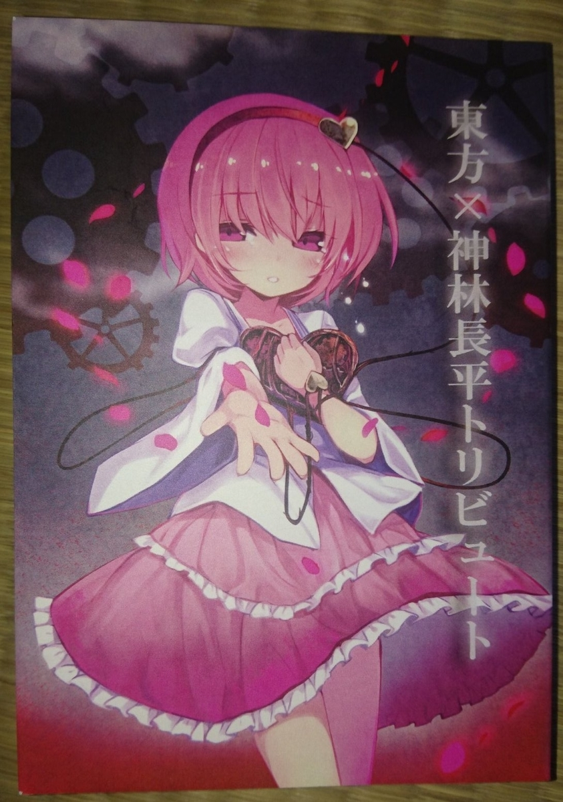

東方x神林長平トリビュート 感想
半年前にTwitterでつぶやいた感想文を再喝。つまりは手抜き記事。
『東方x神林長平トリビュート』 2013年12月30日

1. 天国にそっくりな星
原作：天国にそっくりな星
幻想郷に迷い込んだ日陰症の男が八雲紫と対峙する。原作のようなノーテンキな雰囲気は皆無で、シリアスな駆け引きが展開される。
地の文が思いっきり神林長平。エミュレート具合がすごい。
2. 亡失の乙女と読心の怪物
原作：スフィンクス・マシン（『言葉使い師』に収録）
文章を書けなくなった阿求がさとりにカウンセリングを依頼する。探偵役の似合う二人の掛け合いが良い。伏線が天才的。
さとりのひねくれ具合にワロタ。すごくめんどくさい女だ。あと、ちょい役小鈴の軽率さが、なんかこう、しばきたくなる可愛さ。
3. 死して咲く花、実のある夢
原作：死して咲く花、実のある夢
原作未読（追記：2019年夏頃に読みました。おもろかったです。まる）。死後の世界らしき空間に迷い込んだ岡崎教授とちゆりが出会うものとは。
「情報」をめぐるハードSF。二次創作でよく不自然な絡み方をされるアイツとアイツが、ごく自然なシチュエーションで邂逅しているのがなんだか新鮮。
東方キャラ特有のクレイジーさも神林チックに映えている。
4. 解説
原作：解説
伊藤計劃/円城塔好きにはたまらない文章。幻想郷における解説者といえば…。
察しがついていても名前が明かされた時にはドキドキした。
5. ハイになるには銀河が要る
原作：今宵、銀河を杯にして
原作未読だと辛くないかこれ。ていうか読んでても面白くない。
せっかくのマヘルシャラルハシバズの空気が薄い…。
6. 創言機械
原作：敵は海賊 / 永久帰還装置
岡崎教授が発明した、あらゆる物体を付喪神化させる機械が幻想郷に紛れ込む。そんな中、アリスの人形たちが主による制御を離れ…。
こいつはすげえ。言葉、意識、機械という神林お家芸のテーマの他にも、雪風の空戦描写、敵は海賊のようなアホトリオによるドタバタなど、短いページに様々な要素が凝縮されている。今作のハイライト。
7. 君の祈りは空に消える
原作：帝王の殻
お空に取り憑いた八咫烏としての意識が、確かな生を獲得するため闘争を開始する。
弾幕によるガチの殺し合いの中、必死に足掻く二人のお空が可愛い。対して、挿絵の霊夢の目が怖すぎる。
総評 : 4 / 5 点
東方と神林長平の両方が好きなやつには刺さる内容の同人誌。どちらか片方しか知らなかったら、たぶん読んでも面白くない。でもそんなやつがこの本を読もうとするだろうか。